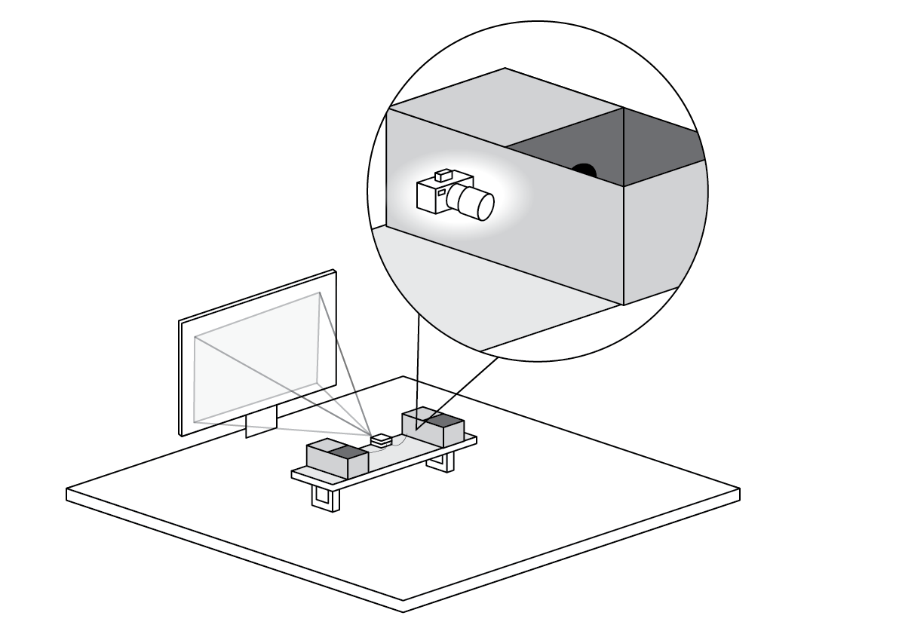
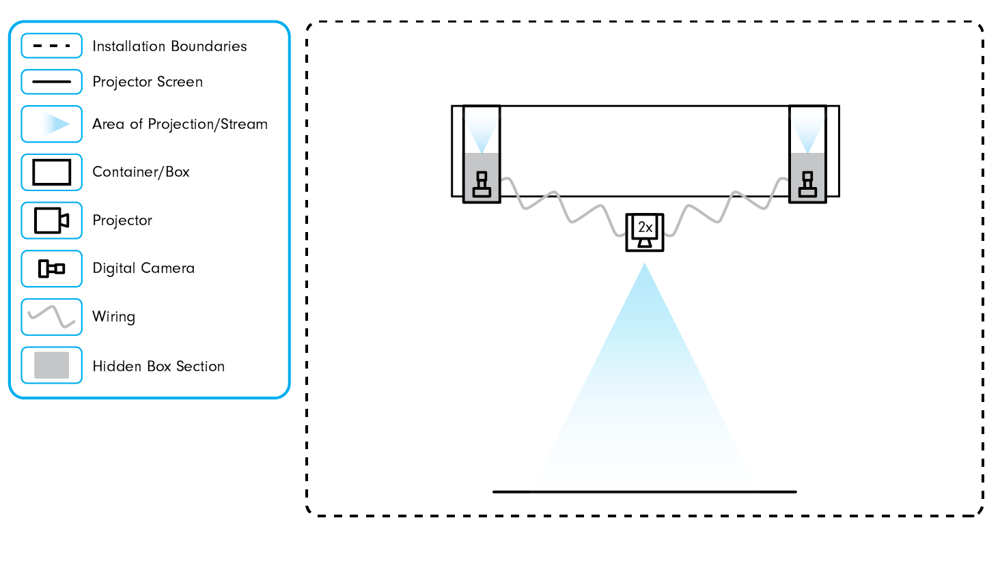
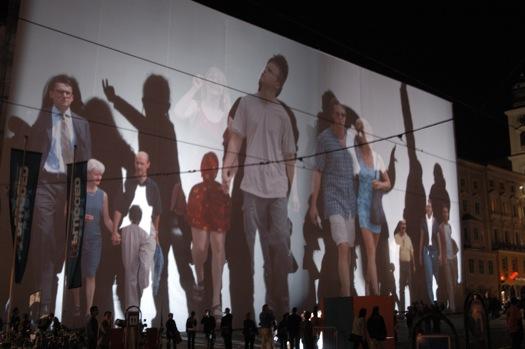
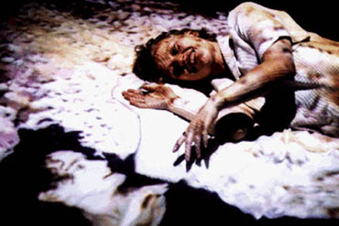

This was a group project where me an four classmates collaborated to make a short animated production based on what we learned in an introduction to 3D animation class.
The premise of the animation is that a cat named 'Sol' is adopted and moves into this new apartment. He sees another cat across the street and they become distant friends, then consistently meet at there windows. After some time goes by the neighboring cat stops showing up at the window, so Sol takes it upon himself to go search for an answer.
The idea behind the installation was that atleast two participants would place their hands in rectangular boxes where cameras were set up on one end, streaming the otherside live and displaying both onto the same projector screen. This would create the interaction which would make two seperate participants seem like they were together on one screen.
The boxes were built in a way that would hide the cameras in a section of the box and have it view a closed off section on the other side of the box. This would be the stage where users could put their hands or objects in and see it displayed on the screen.
 Body Movies (2001) by Rafael Lozano-Hemmer
Telematic Dreaming (1992) by Paul Sermon
The goals for this project was to simulate how people were connecting with one another through remote settings while working and interacting online during the pandemic between 2020-2022. It takes a unique approach and shows how people could be in seperate spaces and still be together at the same time through modern technological mediums such as telecommunication applications.
This project was an organic product that stemmed from interactive art inspiration and successful planning. All parts of this project worked correctly with our original idea and had remained unchanged throughout the process with the exception of a few minor changes.